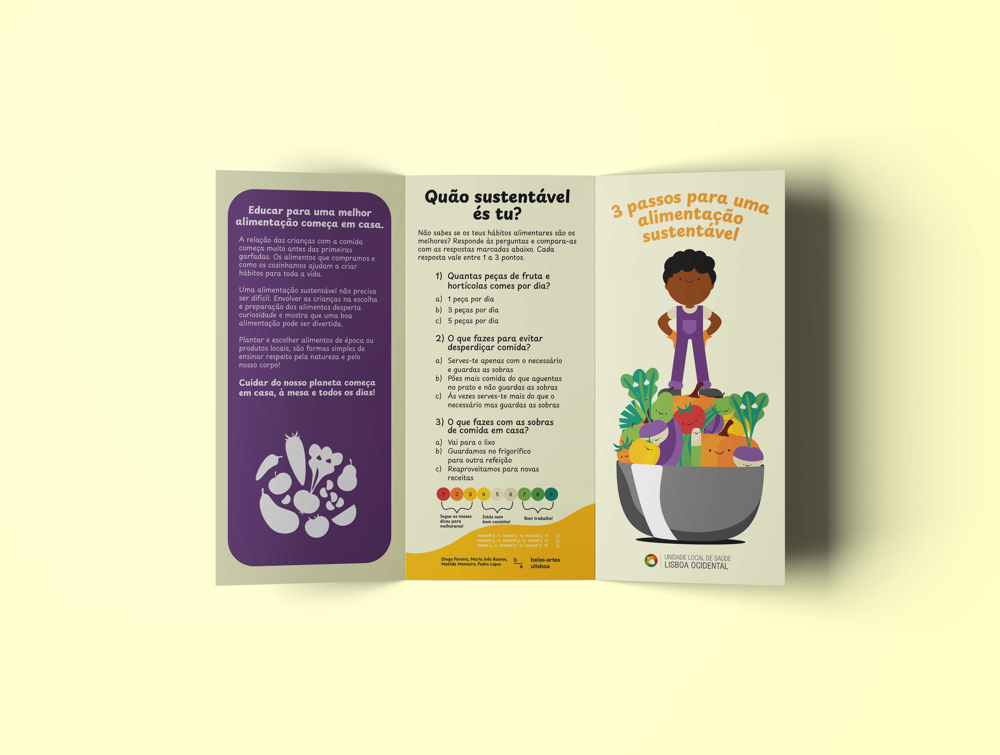
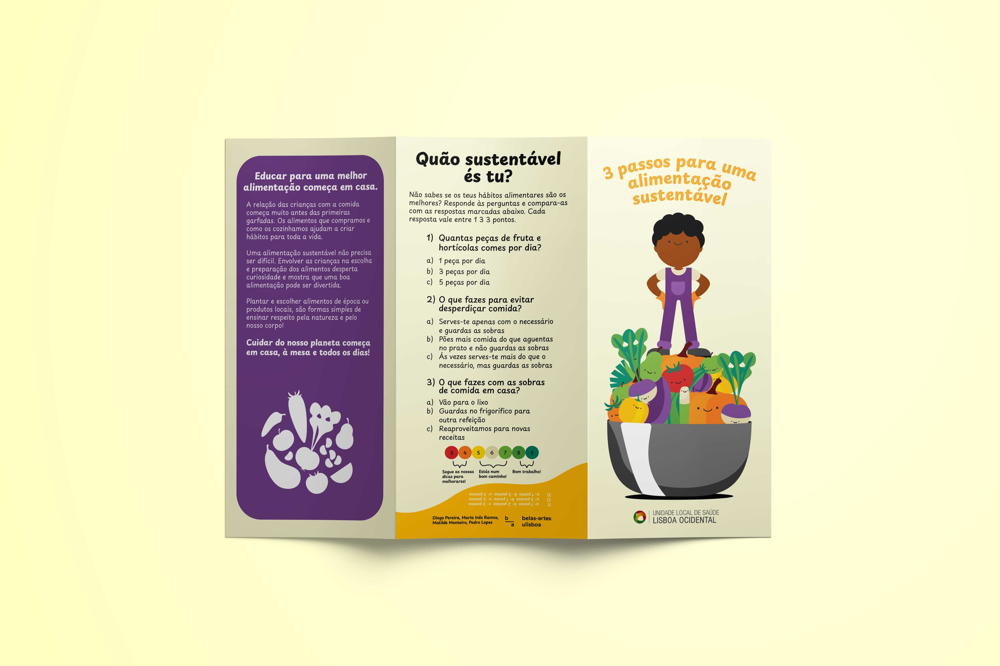
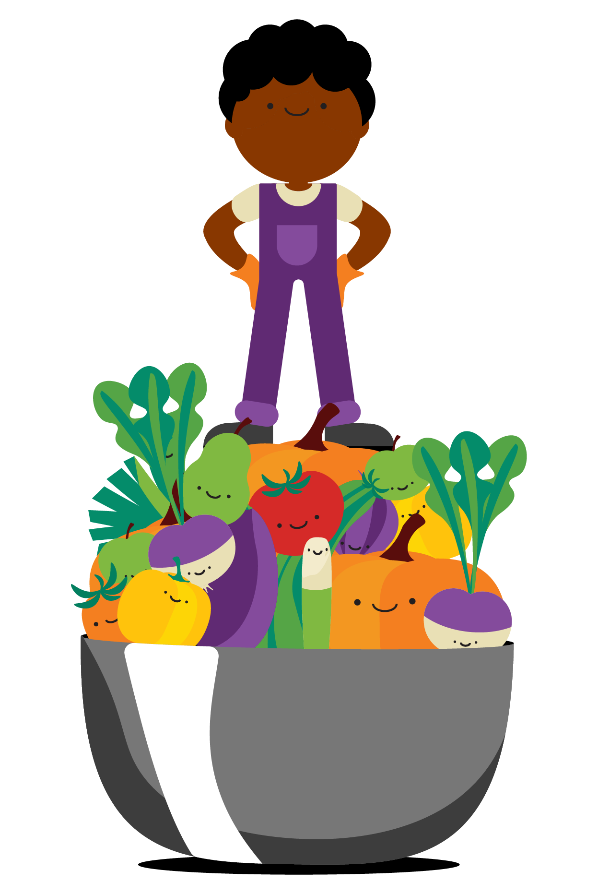
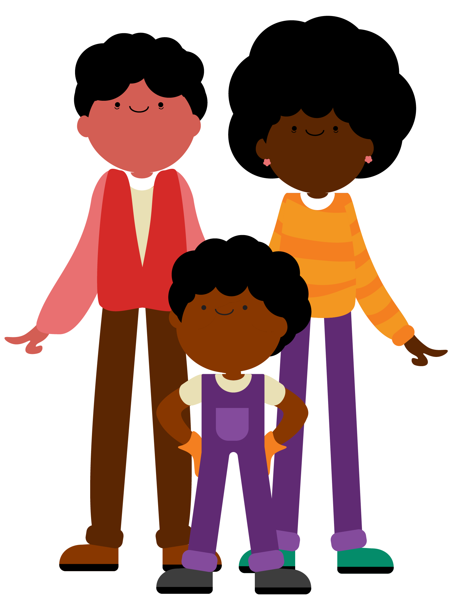
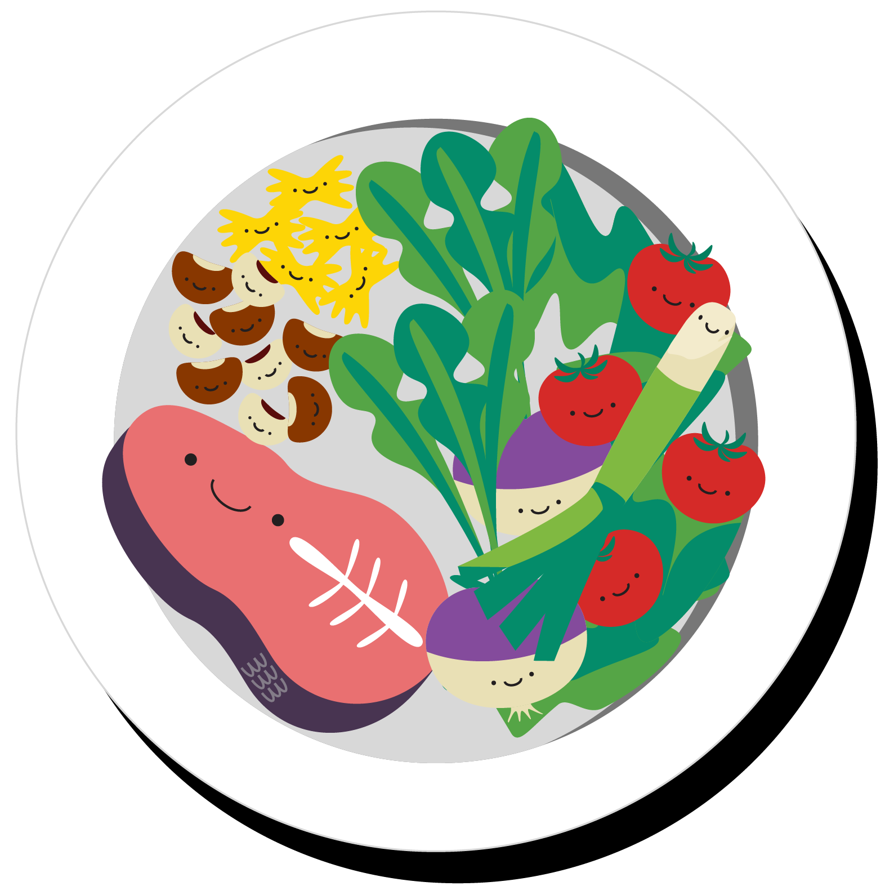
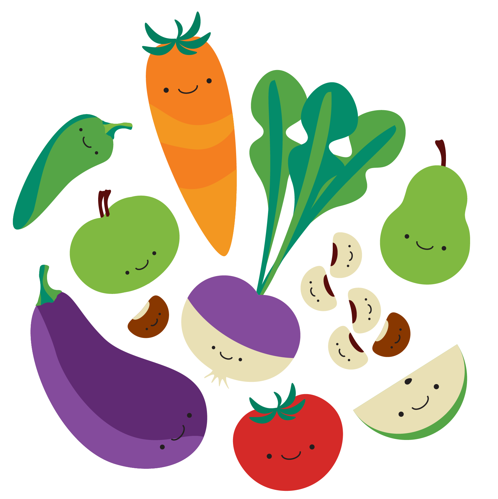
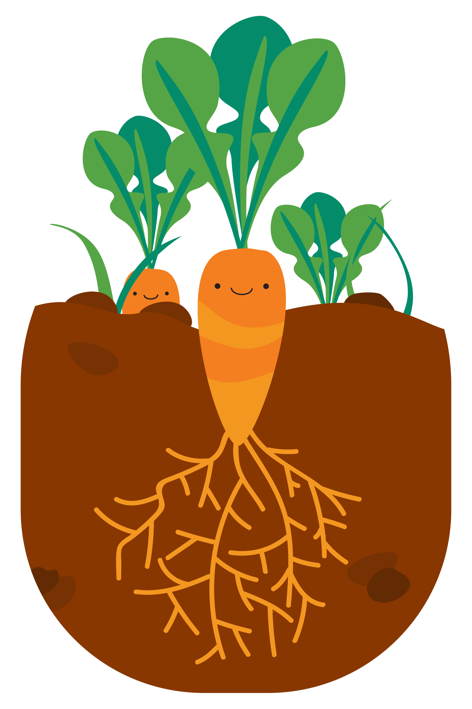

3 passos para uma alimentação mais sustentável
Design/ Flyer/ Vector art
(2025)
For this flyer, my group and I had to create a visual identity for a specific theme given by the ULS, creating this "primed and ready" product for the client. We had to choose a specific age group to focus our art style and information distribution, aiming for a younger audience.







My contribution for this project is primarly focused on the vector elements and layout, while the other elements of the group worked on the information summarizing for the young audience. Since we had full creative freedom, we chose to create this fun elements with a nice face, catching our audience's eye.